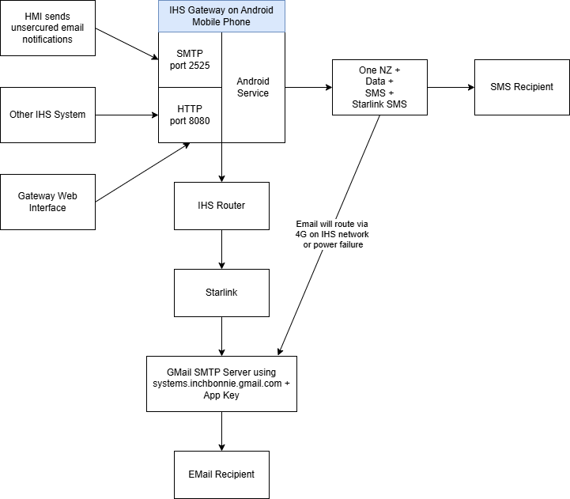

Start or stop the local HTTP gateway service.
Permissions are requested when the app starts. Use Check Permissions to request anything still missing.
The IHS Gateway has been designed specifically to reduce points of failure on getting crucial notifications out from the station to real world recipients.

[INTERNET]
[ACCESS_NETWORK_STATE]
[SEND_SMS]
[FOREGROUND_SERVICE]
[FOREGROUND_SERVICE_LOCATION]
[FOREGROUND_SERVICE_SPECIAL_USE]
[POST_NOTIFICATIONS]
[RECEIVE_BOOT_COMPLETED]
[SYSTEM_ALERT_WINDOW]
[REQUEST_IGNORE_BATTERY_OPTIMIZATIONS]
Settings->Apps->IHS Gateway
Manage app if unused - off
Settings->Battery
Battery protection - on and set to 80%
Apache Cordova ™
Onsen UI
Cordova Plugins:
[gatewayPlugin 1.0.0]
Concept, design and code by
Derek Dikstaal
Waiwera Software 2024
[derek.dikstaal@gmail.com]
1.0.0